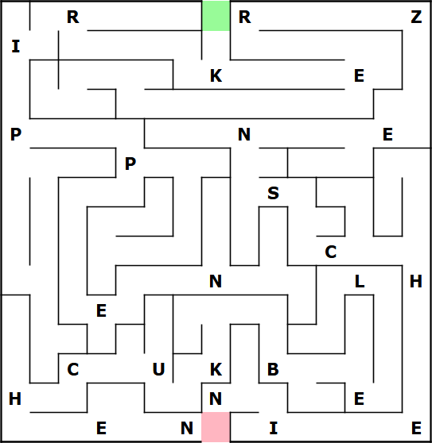

Schnitzeljagd Teil 5
Glückwunsch: du hast Rätsel 5 gefunden
Labyrinth
Starte
an der grünen Markierung und sammle die Buchstaben ein, die sich auf
dem direkten Weg zum Ausgang (rote Markierung) befinden.
Die Buchstaben ergeben - fortlaufend gelesen - das Lösungswort.

Hast
du die Lösung? Prima!
Tipp für die nächste Station: zum wegwerfen geeignet
A
Lösung: Kerzenschein